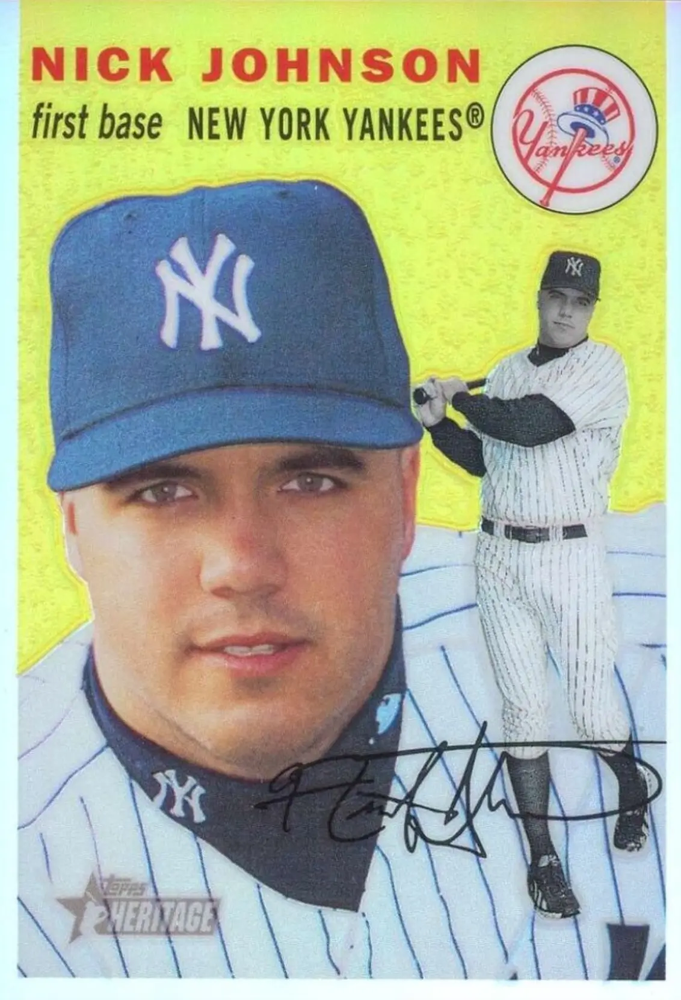

Nick Johnson
Career Highlights & Facts
(Facts are AI-generated and may require verification)
This bio is not assigned. Want to write a SABR bio? Contact
bioproject@sabr.org
.
Full Name
Nicholas Robert Johnson
Born
September 19, 1978 at Sacramento, CA (USA)
Stats
Baseball Reference
Retrosheet
Nicholas Robert Johnson is an American former professional baseball first baseman and designated hitter. During his career Johnson played for the New York Yankees, Montreal Expos/Washington Nationals (2004–2009), Florida Marlins (2009), and Baltimore Orioles (2012).
Career Totals
| WAR | AB | H | HR | BA | R | RBI | SB | OBP | SLG | OPS | OPS+ |
|---|---|---|---|---|---|---|---|---|---|---|---|
| 14.5 | 2698 | 723 | 95 | .268 | 430 | 398 | 29 | .399 | .441 | .840 | 123 |
Statistics via Baseball-Reference.com
The Original Clue